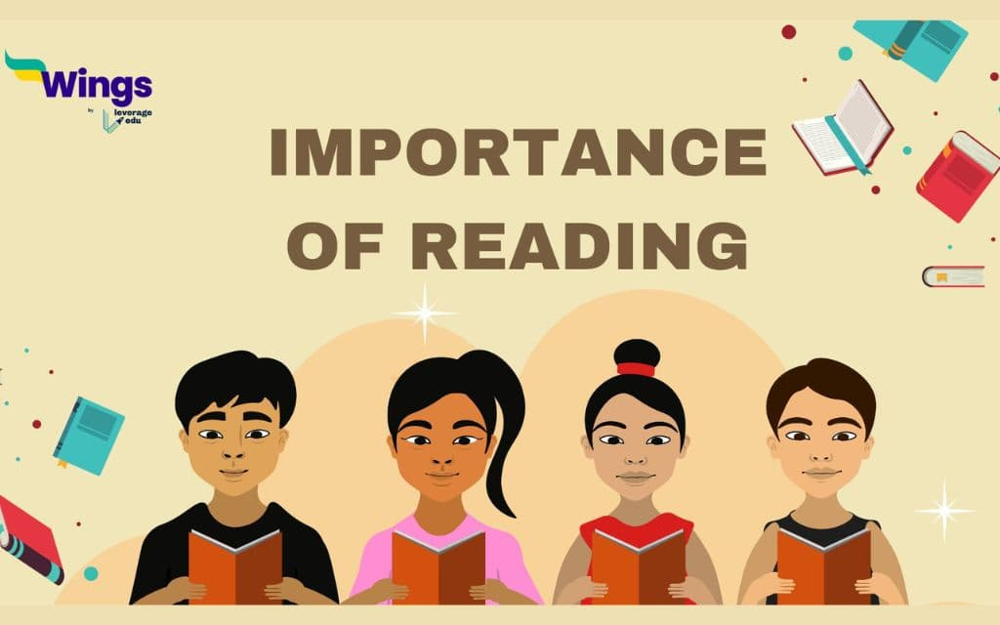
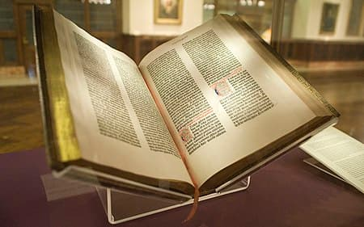
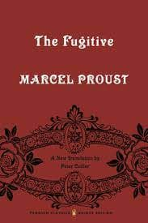
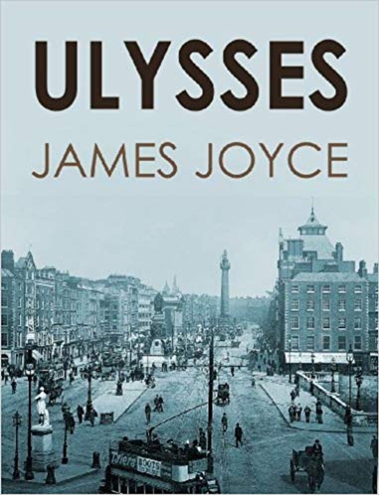
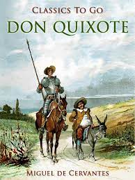
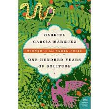
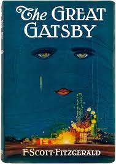

Why reading is important?
While going through an article, you might have come across some words which confuse you or certain words that you hardly even recognize. Finding out their meaning and regularly reading can be the best solution for you to enhance your vocabulary and expand your knowledge.
What is book ?
A book is a medium for recording information in the form of writing or images, typically composed of many pages (made of papyrus, parchment, vellum, or paper) bound together and protected by a cover.[1] It can also be a handwritten or printed work of fiction or nonfiction, usually on sheets of paper fastened or bound together within covers. The technical term for this physical arrangement is codex (plural, codices). In the history of hand-held physical supports for extended written compositions or records, the codex replaces its predecessor, the scroll. A single sheet in a codex is a leaf and each side of a leaf is a page.
As an intellectual object, a book is prototypically a composition of such great length that it takes a considerable investment of time to compose and still considered as an investment of time to read. In a restricted sense, a book is a self-sufficient section or part of a longer composition, a usage reflecting that, in antiquity, long works had to be written on several scrolls and each scroll had to be identified by the book it contained. Each part of Aristotle's Physics is called a book. In an unrestricted sense, a book is the compositional whole of which such sections, whether called books or chapters or parts, are parts.
The intellectual content in a physical book need not be a composition, nor even be called a book. Books can consist only of drawings, engravings or photographs, crossword puzzles or cut-out dolls. In a physical book, the pages can be left blank or can feature an abstract set of lines to support entries, such as in an account book, appointment book, autograph book, notebook, diary or sketchbook. Some physical books are made with pages thick and sturdy enough to support other physical objects, like a scrapbook or photograph album. Books may be distributed in electronic form as ebooks and other formats.
Although in ordinary academic parlance a monograph is understood to be a specialist academic work, rather than a reference work on a scholarly subject, in library and information science monograph denotes more broadly any non-serial publication complete in one volume (book) or a finite number of volumes (even a novel like Proust's seven-volume In Search of Lost Time), in contrast to serial publications like a magazine, journal or newspaper. An avid reader or collector of books is a bibliophile or, colloquially, "bookworm". Books are traded at both regular stores and specialized bookstores, and people can read borrowed books, often for free, at libraries. Google has estimated that by 2010, approximately 130,000,000 titles had been published.[2]
In some wealthier nations, the sale of printed books has decreased because of the increased usage of e-books.[3] However, in most countries, printed books continue to outsell their digital counterparts due to many people still preferring to read in a traditional way.[4][5][6][7] The 21st century has also seen a rapid rise in the popularity of audiobooks, which are recordings of books being read aloud.[8]
Importence of reading
Reading is a very good habit that one needs to develop in life. Good books can inform you, enlighten you and lead you in the right direction. There is no better companion than a good book. Reading is important because it is good for your overall well-being. Once you start reading, you experience a whole new world. When you start loving the habit of reading you eventually get addicted to it. Reading develops language skills and vocabulary. Reading books is also a way to relax and reduce stress. It is important to read a good book at least for a few minutes each day to stretch the brain muscles for healthy functioning.
-
Importance of Reading in Polishing Your Mind
Reading requires you to have the patience to build a cognitive perspective. This is considered to be a prime brain-stimulating activity to sharpen your mind. Individuals engaged in reading have a slower memory decline than those who avoid reading. It also improves memory and builds focus.
-
Importance of Reading in Strengthening Your Writing Ability
Having a strong vocabulary can readily benefit you to strengthen your writing ability both personally and professionally. It inspires writers to stay positive and express their thoughts more clearly. Reading helps us in developing a knack for understanding the perspective of different authors that helps in writing about things by ourselves. It is very crucial to comprehend the subject matter and allow our memory to retain it.
-
Importance of Reading in Lowering Stress
Reading leads you on a journey to another world. People reading literature or novels require a lot of concentration which allows them to stay away from the distraction in their lives which in turn promotes inner calmness and enhances overall health.
-
Importance of Reading in Reducing Depression
Reading is an essential aspect of learning and has multiple benefits attached to the exercise. Reading is important because it makes you more empathetic, and knowledgeable and stimulates your imagination. A study conducted by the University of Sussex showed that reading reduces stress by 68%. It helps in reducing tension and relax muscles which in turn helps people sleep better and stay healthy.
-
Importance of Reading in Increasing Your Vocabulary
Medicinal therapies to combat depression can be reduced by incorporating reading habits. This is exactly what self-help books, novels, blogs, articles, and non-fiction books contribute. Reading is found to lower heart rate, reduce stress and decrease blood pressure.
Top Books of All The Time
-
In Search of Lost Time by Marcel Proust
Swann's Way, the first part of A la recherche de temps perdu, Marcel Proust's seven-part cycle, was published in 1913. In it, Proust introduces the themes that run through the entire work. The narrator recalls his childhood, aided by the famous madeleine; and describes M. Swann's passion for Odette. The work is incomparable. Edmund Wilson said "[Proust] has supplied for the first time in literature an equivalent in the full scale for the new theory of modern physics."
 -
Ulysses by James Joyce
Ulysses chronicles the passage of Leopold Bloom through Dublin during an ordinary day, June 16, 1904. The title parallels and alludes to Odysseus (Latinised into Ulysses), the hero of Homer's Odyssey (e.g., the correspondences between Leopold Bloom and Odysseus, Molly Bloom and Penelope, and Stephen Dedalus and Telemachus). Joyce fans worldwide now celebrate June 16 as Bloomsday.
 -
Don Quixote by Miguel de Cervantes
Alonso Quixano, a retired country gentleman in his fifties, lives in an unnamed section of La Mancha with his niece and a housekeeper. He has become obsessed with books of chivalry, and believes their every word to be true, despite the fact that many of the events in them are clearly impossible. Quixano eventually appears to other people to have lost his mind from little sleep and food and because of so much reading.
 -
One Hundred Years of Solitude by Gabriel Garcia Marquez
One of the 20th century's enduring works, One Hundred Years of Solitude is a widely beloved and acclaimed novel known throughout the world, and the ultimate achievement in a Nobel Prize–winning career. The novel tells the story of the rise and fall of the mythical town of Macondo through the history of the Buendía family. It is a rich and brilliant chronicle of life and death, and the tragicomedy of humankind. In the noble, ridiculous, beautiful, and tawdry story of the Buendía family, one sees all of humanity, just as in the history, myths, growth, and decay of Macondo, one sees all of Latin America. Love and lust, war and revolution, riches and poverty, youth and senility — the variety of life, the endlessness of death, the search for peace and truth — these universal themes dominate the novel. Whether he is describing an affair of passion or the voracity of capitalism and the corruption of government, Gabriel García Márquez always writes with the simplicity, ease, andpurity that are the mark of a master. Alternately reverential and comical, One Hundred Years of Solitude weaves the political, personal, and spiritual to bring a new consciousness to storytelling. Translated into dozens of languages, this stunning work is no less than an accounting of the history of the human race.
 -
The Great Gatsby by F. Scott Fitzgerald
The novel chronicles an era that Fitzgerald himself dubbed the "Jazz Age". Following the shock and chaos of World War I, American society enjoyed unprecedented levels of prosperity during the "roaring" 1920s as the economy soared. At the same time, Prohibition, the ban on the sale and manufacture of alcohol as mandated by the Eighteenth Amendment, made millionaires out of bootleggers and led to an increase in organized crime, for example the Jewish mafia. Although Fitzgerald, like Nick Carraway in his novel, idolized the riches and glamor of the age, he was uncomfortable with the unrestrained materialism and the lack of morality that went with it, a kind of decadence.
